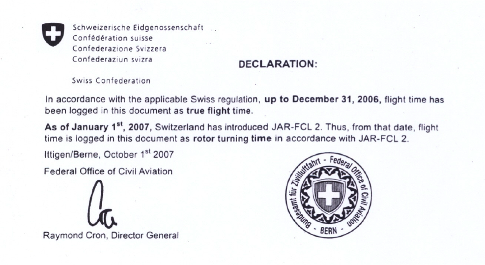
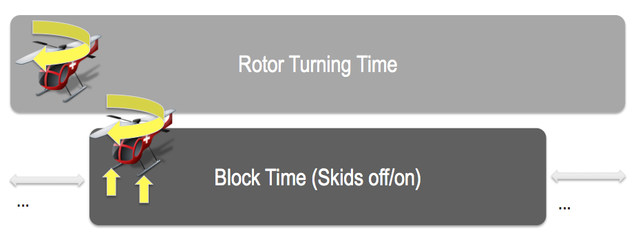

Blog
Pyramid Web Application Framework
repoze.bfg ist ein mächtiges zugleich aber einfaches Framework und wir freuen uns daher sehr auf Pyramid.
Ganz in der repoze.bfg-Tradition bietet Pyramid eine umfassende, stets aktuelle Dokumentation: http://docs.pylonshq.com/pyramid/dev
Die nächsten Projekte werden wir bereits auf Pyramid starten und unsere bisherigen repoze.bfg Applikationen nach dem Erscheinen von Pyramid 1.0 auf die neue code base umstellen.
Die Ankündigung von Pyramid: http://lists.repoze.org/pipermail/repoze- dev/2010-November/003619.html
P.S. Offenbar wurden auch unwahre Gerüchte verbreitet, welchen das Pyramid- Team mit aller Entschiedenheit entgegen tritt :-): http://docs.pylonsproject.org/denials/pyramid.html
Die Kluft zwischen Worten und Taten: The Knowing Doing Gap
Jeffrey Pfeffer und Robert I. Sutton beschreiben in "The Knowing-Doing- Gap" ein Phänomen, das wir alle nur zu gut kennen. Oft ist es schwierig, etwas wirklich in die Tat umzusetzen und es entsteht eine Kluft zwischen dem Wissen was zu tun ist und der Umsetzung.
Pfeffer und Sutton beschreiben die Ursachen für endemische Umsetzungsdefizite:
1. Talk and Action
One of the main barriers to turning knowledge into action is the tendency to equate talking about something with actually doing something about it. In many organizations, there is an unspoken but powerful belief that once a decision is made to do something, no additional work is needed to make sure it is implemented!
Tut doch mal richtig gut, das in dieser Deutlichkeit zu lesen! Dass Worte gegenüber Taten im Vorteil sind, scheint mit sozialer Interaktion zu tun zu haben. Auch wenn wir eine Person an ihren Taten messen sollten, tun wir es meistens an ihren Worten.
We should form our impressions of others based on how well they perform, how well they get things accomplished, and what they contribute to the organization through their actions. But often we form our impressions of others based on how smart they seem. Appearing smart is mostly accomplished by sounding smart; being confident, articulate, eloquent, and filled with interesting information and ideas; and having a good vocabulary.
Auch das sitzt! Es kommt aber noch schlimmer, denn das Streben danach von den andern als intelligent wahrgenommen zu werden, wird sogar destruktiv und verhindert gute neue Ideen:
Interestingly enough, for getting anything done in organizations, one of the best ways of sounding smart is to be critical of the ideas of other people. It is always possible to find a reason to say no to some idea or proposal. People in many organizations are remarkably skilled at making excuses about why something cannot be done, why something will not work, and why the present condition is better than trying something new.
Akzentuiert wird diese Tendenz zusätzlich durch die Tatsache, dass Worte sofort bewertbar sind, die Umsetzung jedoch Zeit braucht. Wenn also der Zeithorizont kurz ist, sind die "Taten" gegenüber Worten immer im Nachteil, denn etwas auch zu tun und nicht nur davon zu sprechen braucht Zeit.
Zudem versuchen Leute auf andere dadurch einen guten Eindruck zu machen, indem sich sich einer komplexen Sprache bedienen. Einfache Ideen hätten aber eine grösse Chance verwirklicht zu werden, weil sie einfacher zu erklären und transparenter sind daher weniger einfach durch Bremser bekämpft werden können.
2. Memory and Thinking
Memory often serves as a substitute for thinking. People often do what has always been done without reflecting.
Der Punkt scheint mir weniger neu. Interessanter wird es wenn die Autoren konkreter werden und feststellen, dass Menschen - besonders unter Zeitdruck - dazu neigen Evidenz, welche ihrer eigenen Einschätzung entgegensteht zu verdrängen.
3. Fear and Knowlege
It is easier to encourage people to question conventional wisdom and to create dramatic breaks with the past, in an atmosphere of trust and safety.
Wer Neues wagt macht Fehler. Am sichersten ist es immer gar nichts zu tun und auf Tauchstation zu gehen. Das Umfeld muss also so sein, dass jeder Fehler machen darf.
4. Measurement and Judgment
Measures focus attention on what is measured. Measures affect what people do, as well as what they notice and ignore. What is measured is presumed to be important. What gets measured gets done. What is not measured tends to be ignored.
Auch das Problem ist hinreichend bekannt. In der Leistungsbeurteilung wird Quantifizierbares bevorteilt. Dies kann zu falschen Anreizen und sogar dazu führen, dass Angestellte viel Zeit darauf verwenden Indikatoren zu manipulieren. Nicht explizit erwähnen Peffer und Sutton die Verdränung der intrinsischen Motivation, die auch durch ein falsches Leistungsmessungssystem verursacht werden kann.
5. Internal Competition
Competition inhibits learning and creativity. Instead of focusing on the task at hand, people focus too heavily on what competitors are doing, on how well they are performing in comparison, and on the reactions of third parties such as leaders and peers who are the audience for the contest. Moreover, when a task is difficult or complex and requires help and sharing ideas with others, internal competition is especially destructive.
#
Fazit: Small is beautiful!
Alle diese hemmenden Faktoren dürften mit der Organisationsgrösse zunehmen. Peffer und Sutton weisen denn auch explizit auf die Notwendigkeit der Dezentralisierung hin, gehen aber nicht soweit eine radikale Verkleinerung grosser Organisationen zu fordern. Kleine Firmen können sich den Overhead, der ausschliesslich Worte ohne Taten produziert, schlichtweg nicht leisten.
suisseID: Bitte keine rein zertifikats-basierte Authentifizierung
Unsere Kritik an der Art und Weise wie Service-Provider die suisseID in ihre Internet-Applikationen integrieren kann man hier nachlesen.
Die eigentlichen Stärken der suisseID liessen sich nützen, wenn man sich konsequent an der Kernidee einer Authentifizierung mittels einer Trusted Third Party orientiert.
Trusted Third Party
- Als Endbenutzer vertraue ich nur meinem Identity Provider (IdP): Natürlich weiss ich wer das ist (im Moment QuoVadis und SwissSign).
- Als Service Provider vertraue ich nur den Identity Providern.
Daraus leitet sich Folgendes ab:
- Als Endbenutzer gebe ich Daten nur über meinen IdP frei. Dies geschiet immer über die Website des IdP und lasse nur diesen mein Zertifikat auslesen.
- Als Service Provider lese ich nie ein Zertikat direkt aus, sondern leite den Benutzer lediglich auf den IdP weiter und bekomme die angefragten Informationen - nach der Zustimmung des Endbenutzers - vom IdP.
Nun ist aber auch die rein zertifikats-basierte Authentifizierung nach den Einsatzszenarien der suisseID zulässig.
Für Internet-Applikationen scheint uns dies nicht der richtige Weg, weil:
- Der Endbenutzer sein Zertifikat nicht einfach jeder Internetseite zeigen sollte (vgl. unseren Beitrag dazu).
- Der Service Provider gar nicht zu wissen braucht, auf welche Art sich der Benutzer beim IdP identifiziert.
Identitätsprovider können für mehr Sicherheit sorgen
Und jetzt kommt der Clou: Es liegt eigentlich beim Identitätsprovider die Sicherheit der Authentifizierung zu erhöhen: er kann zum Beispiel zusätzlich ein One Time Token per SMS an den Benutzer schicken (wie das Banken schon machen).
Und es kommt noch besser: Damit lösen wir auch das unten stehende Problem.
Offenbar arbeitet SwissSign bereits an suisseID in der Cloud, wo mein Zertifikat also beim IdP liegen würde und nicht mehr physisch bei mir. Dazu müsste dann wohl in jedem Fall ein Verfahren wie ein One Time Token über SMS oder etwas Ähnliches dazu kommen.
Service Provider, die eine echte Authentifizierung über den IdP machen, müssen dabei an ihrer Implementation gar nichts ändern.
Keine rein zertifikats-basierten Anmeldungen mehr!
Die Service-Provider sollen aufhören direkt Zertifikate auszulesen. Das verbaut uns allen den oben beschriebenen Weg. Das SECO hätte es einfach in der Hand (gehabt), Subventionen für Webapplikationen nur für die Authentifizierung via einen IdP zu sprechen. Wir sehen wirklich nicht ein was man bei einer Webapplikationen durch die rein zertifikatsbasierte Anmeldung gewinnt; man muss für jede Anfrage so oder so einen Abgleich mit Certificate Revocation List (CRL) machen. Bleibt einzig der Punkt, dass die Email-Adresse leider nicht zu den Core Attributes gehört und nur auf dem Zertifikat gespeichert ist. Da viele Service Provider genau an dieser interessiert sind, wäre es wohl besser die Spezifikation in diesem Punkt zu ändern.
How to convert from Subversion to Git
On mac you want to install git svn:
"sudo port install git-core +svn"
Next you create an authors file (authors.txt) to convert the svn contributors and keep the full history:
buck = Buck Mulligan <buck@seantis.ch>
hans = Hans Castrop <hans@seantis.ch>
The simplest command if only want to convert your trunk:
git svn clone --no-metadata -A authors.txt https://svn.example.com/code/trunk
To convert branches/tags see: http://pauldowman.com/2008/07/26/how-to- convert-from-subversion-to-git/
Logbook für Helicopter-Piloten
Gesetzliche Grundlagen
Helipiloten zeichnen in ihrem Flugbuch die Rotor Turning Time auf. Die entsprechende Weisung gilt seit Januar 2007 und wurde vom BAZL im Zusammenhang mit der Einführung von JAR-FCL 2 erlassen.

Flight time ist nach JAR-FCL 2.001 definiert als:
The total time from the moment a helicopter’s rotor blades start turning until the moment the helicopter finally comes to rest at the end of the flight, and the rotor blades are stopped.
Block time ist gemäss der Verordnung des UVEK über die Betriebsregeln im gewerbsmässigen Luftverkehr (748.127.1 PDF) definiert als:
Gesamtzeit zwischen dem erstmaligen Abrollen eines Luftfahrzeugs aus seiner Parkposition zum Zweck des Startens bis zum Stillstand an der zugewiesenen Parkposition und bis alle Triebwerke abgestellt sind.
Bei Hubschraubern gilt als Blockzeit die Gesamtzeit zwischen der erstmaligen Fortbewegung eines Hubschraubers zum Zwecke des Abfluges und dem Stillstand nach Beendigung des Fluges.
Rotor Turning Time / Block Time
Aus den zwei Definitionen ergeben sich folgende Implikationen:
- Die Block Time ist kürzer als Rotor Turning Time (Motor läuft schon und Pilot geht z.B. noch die Checkliste durch.)
- Bei einem Flug mit mehrmaligem Absetzen „läuft“ die Rotor Turning Time weiter, die Blockzeit kann aber unterbrochen werden, wenn der Heli auf den Kufen steht.
- Für Currency Limitation ist einzig die Block Time relevant.

Umsetzung in myControl
MyControl testen: https://www.mycontrol.aero
In myControl hat der Helipilot zusätzlich zur Rotor Turning Time für jeden Flug die Möglichkeit die Block Time zu loggen. Auf dem PDF-Ausdruck seines Flugbuches wird die Rotor Turning Time ausgewiesen, die Block Time wird ausschliesslich für die Berechung der Currency Limitation verwendet.